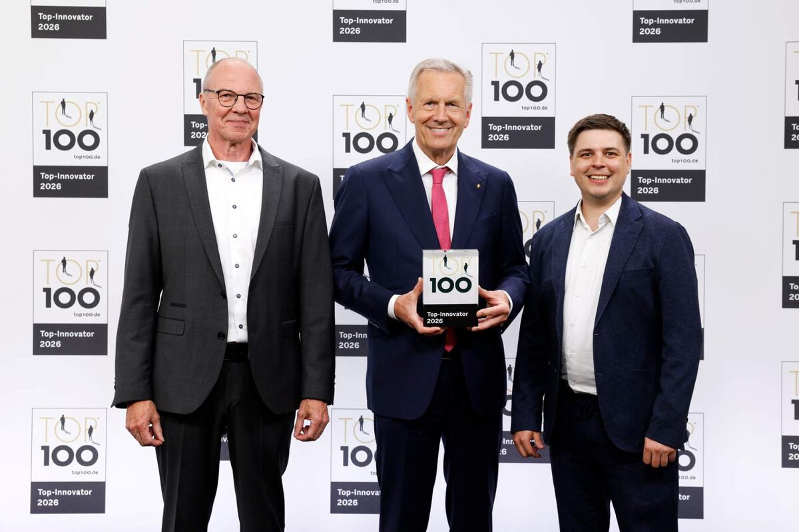

Brasseler erhält TOP 100-Auszeichnung in Heidelberg
Veröffentlicht am 16.07.2026
Lemgo/Heidelberg, 15.07.2026
Brasseler hat seine TOP 100-Auszeichnung im Rahmen des Deutschen Mittelstands-Summit in Heidelberg entgegengenommen. Das Lemgoer Familienunternehmen wurde 2026 bereits zum dritten Mal mit dem renommierten Innovationssiegel ausgezeichnet und zählt damit erneut zu den innovativsten mittelständischen Unternehmen Deutschlands.
Auszeichnung als Bestätigung und Ansporn
Die Preisverleihung fand im Heidelberg Congress Center statt. TOP 100-Mentor Christian Wulff, Bundespräsident a. D., gratulierte den ausgezeichneten Unternehmen persönlich. Für Brasseler nahm unter anderem Michael Küllmer, Head of Innovation Management, die Auszeichnung vor Ort entgegen.
Im wissenschaftlichen Auswahlverfahren überzeugte Brasseler in seiner Größenklasse besonders in der Kategorie Innovationserfolg. Bewertet wurde die Innovationskraft mittelständischer Unternehmen anhand von mehr als 100 Kriterien in fünf Kategorien. Die wissenschaftliche Leitung des Wettbewerbs liegt bei Prof. Dr. Nikolaus Franke, einem der führenden Innovationsforscher im deutschsprachigen Raum.

„Innovation entsteht nicht durch eine einzelne Auszeichnung, sondern durch kontinuierliche Arbeit in der gesamten Brasseler-Gruppe“, sagt Stephan Köhler, Sprecher der Geschäftsführung.„Die erneute Auszeichnung als TOP 100-Innovator ist daher eine wertvolle Bestätigung. Sie zeigt, dass wir in den vergangenen Jahren wichtige Grundlagen geschaffen haben. Gleichzeitig ist sie für uns vor allem ein Ansporn, diesen Weg konsequent weiterzugehen – mit dem Ziel, auch künftig Lösungen zu entwickeln, die Anwendern und Patienten einen echten Mehrwert bieten.“
Anwendernutzen als Treiber für Innovation
Brasseler entwickelt unter der Marke Komet innovative Präzisionsinstrumente und Systemlösungen für die Dentalbranche und die Chirurgie, die gezielt auf Anforderungen aus der Praxis ausgerichtet sind. Diese konsequente Ausrichtung auf Anwendernutzen und kontinuierliche Weiterentwicklung war ein wesentlicher Faktor für die erneute Auszeichnung als TOP 100-Innovator.
Beispiele dafür sind der EnDrive, ein Antrieb für Wurzelkanalinstrumente, der mit dem Red Dot Design Award ausgezeichnet wurde, sowie das Instrument „Rocky“ von Komet Dental. Rocky wurde speziell für die Entfernung besonders harter vollkeramischer Kronen aus Zirkonoxid oder Lithiumdisilikat entwickelt und verbindet hohe Schneidleistung mit Langlebigkeit. Solche Entwicklungen tragen dazu bei, Behandlungsabläufe effizienter, sicherer und anwenderfreundlicher zu gestalten und spiegeln den Innovationsanspruch des Unternehmens wider.
„Die Preisverleihung in Heidelberg hat sichtbar gemacht, was viele Kolleginnen und Kollegen bei Brasseler täglich vorantreiben“, sagt Michael Küllmer, Head of Innovation Management. „Entscheidend ist für uns aber, dass wir aus Ideen, Rückmeldungen aus der Praxis und technologischer Kompetenz konkrete Lösungen entwickeln. Daran arbeiten wir in Lemgo und innerhalb der gesamten Brasseler-Gruppe weiter.“
Austausch als Grundlage für künftige Innovationen
Ein wichtiger Baustein ist dabei der direkte Austausch mit Anwendern, Kunden, Universitäten und externen Experten. Mit Formaten wie der Komet Academy, der Präsenz auf internationalen Fachveranstaltungen und der Zusammenarbeit mit Key-Opinion-Leadern baut Brasseler sein Wissens- und Expertennetzwerk weiter aus. Erkenntnisse aus der Praxis werden gezielt in die Entwicklung zurückgespielt und tragen dazu bei, Innovationen nah am tatsächlichen Bedarf entstehen zu lassen.
Mit der dritten TOP 100-Auszeichnung nach 2022 und 2023 sieht Brasseler seinen eingeschlagenen Weg bestätigt. Zugleich versteht das Unternehmen die Auszeichnung als Ausgangspunkt für die nächsten Schritte: die weitere Stärkung der Innovationskultur, die engere Zusammenarbeit innerhalb der Brasseler-Gruppe und die Entwicklung neuer Lösungen für Anwenderinnen und Anwender weltweit.

(v.l.) Michael Küllmer (Head of Innovation Management), Christian Wulff (TOP 100-Mentor und ehemaliger Bundespräsident) und Mark Thiel (Unternehmenskommunikation). Foto: Brasseler

Pressekontakt
Melanie Köhler
Unternehmenskommunikation
Telefon +49 (0) 160 3447748
presse@brasseler.de